GEO-02 · Del mapa al relleu¶
Com podem representar una muntanya en un full pla?¶
1 · Un problema de representació¶
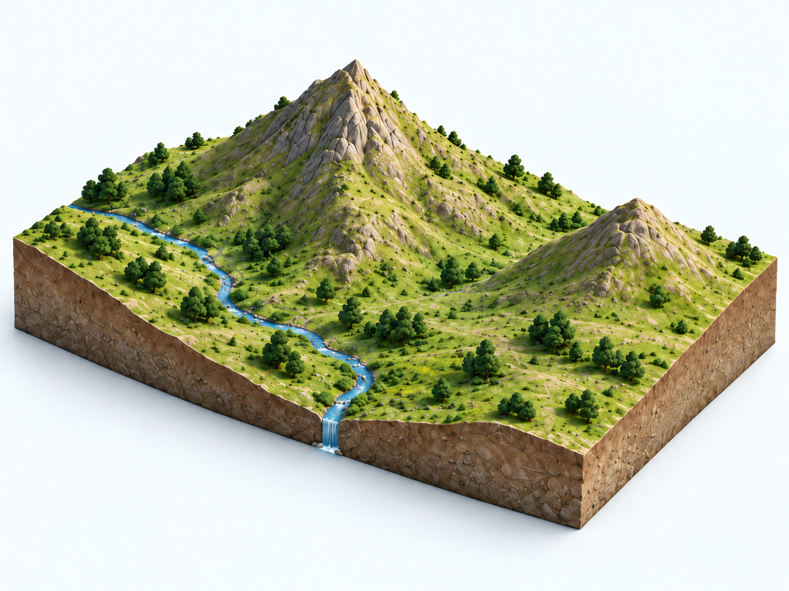
Com podríem representar aquest relleu en un full pla sense perdre la informació sobre l'altura?
Pensau-ho durant mig minut i comentau una proposta amb la persona del costat.
2 · Tallam el relleu¶
Imaginem que travessam el terreny amb un pla perfectament horitzontal.
Què passa amb la línia de contacte entre el pla i el relleu quan pujam el pla?
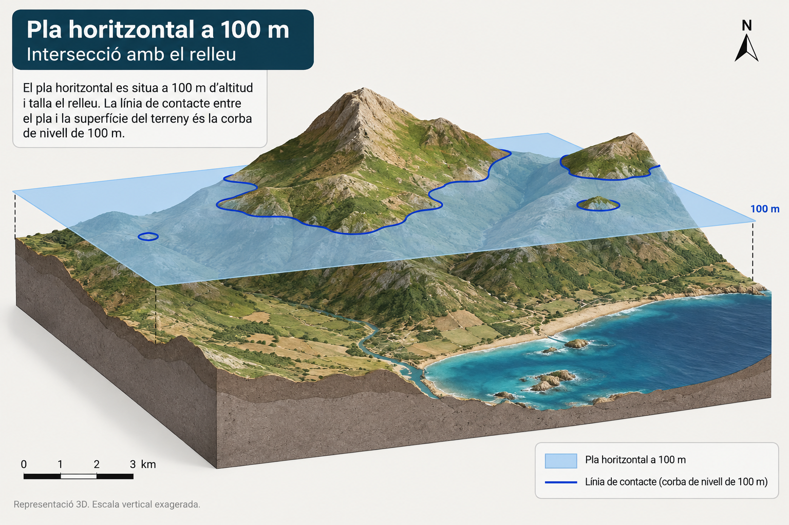
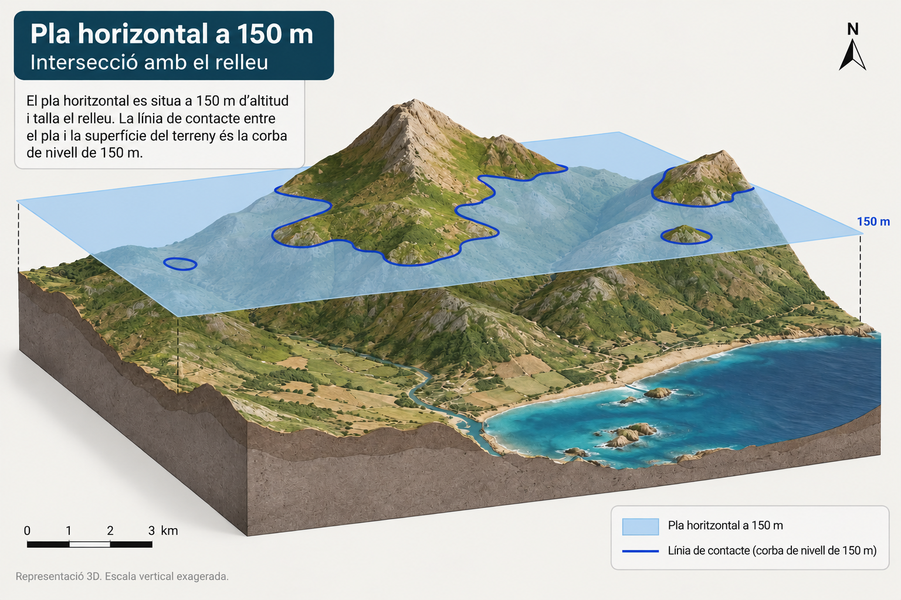
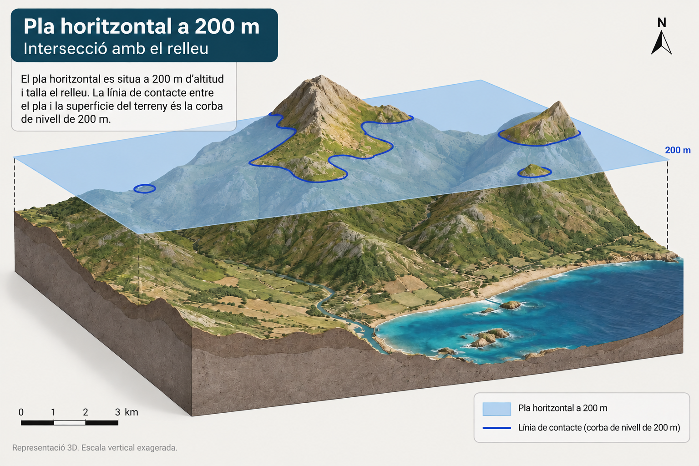
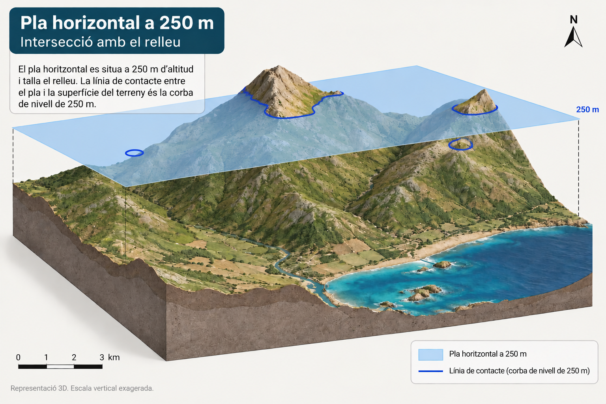
3 · I si miram cada tall des de dalt?¶
Ara miram el mateix territori en planta i hi projectam la línia de contacte de cada tall.
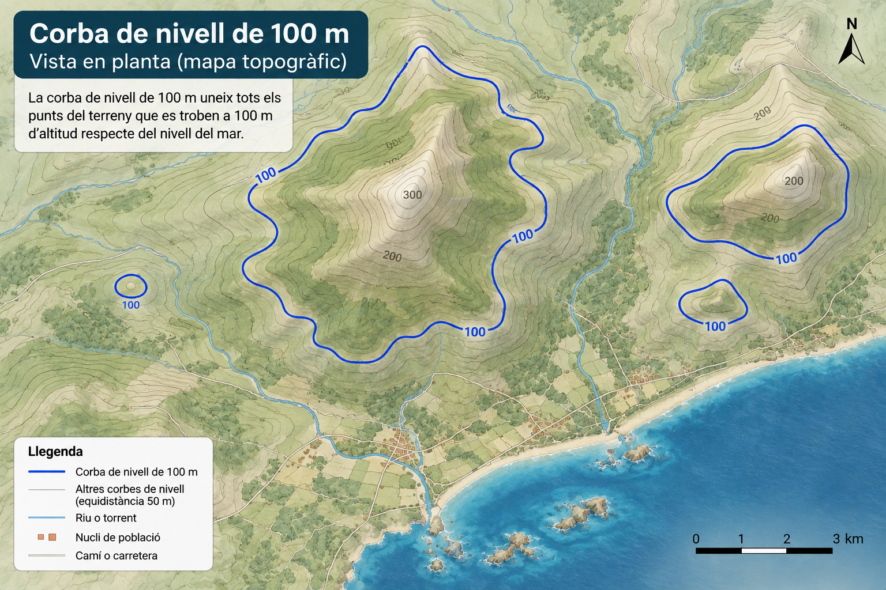
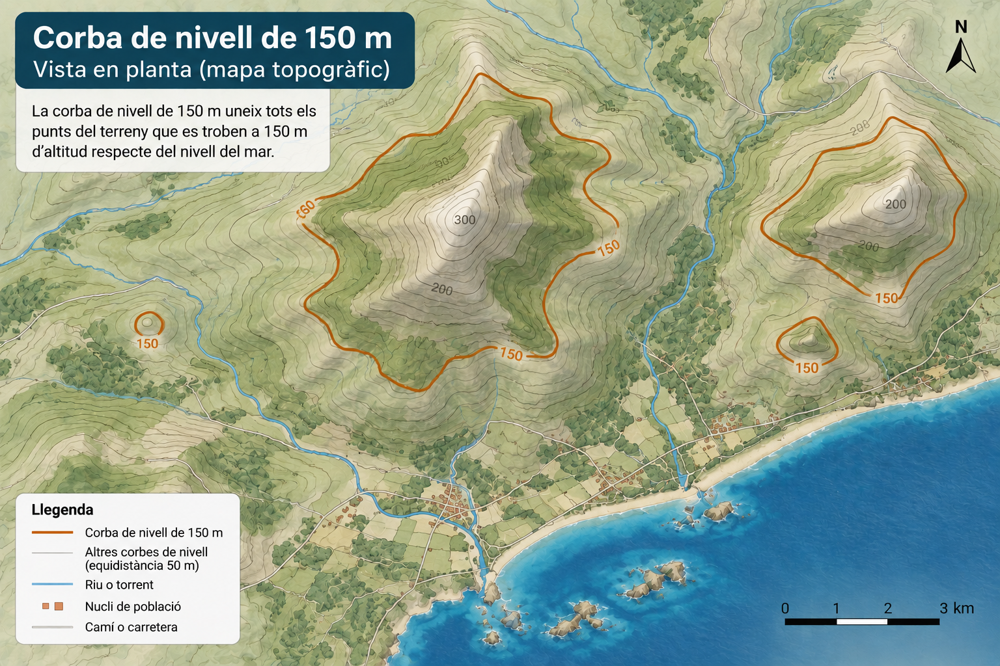
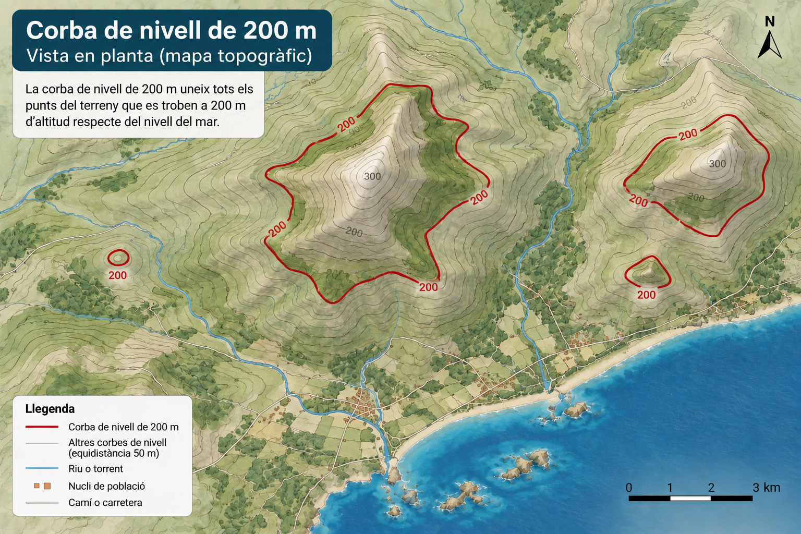
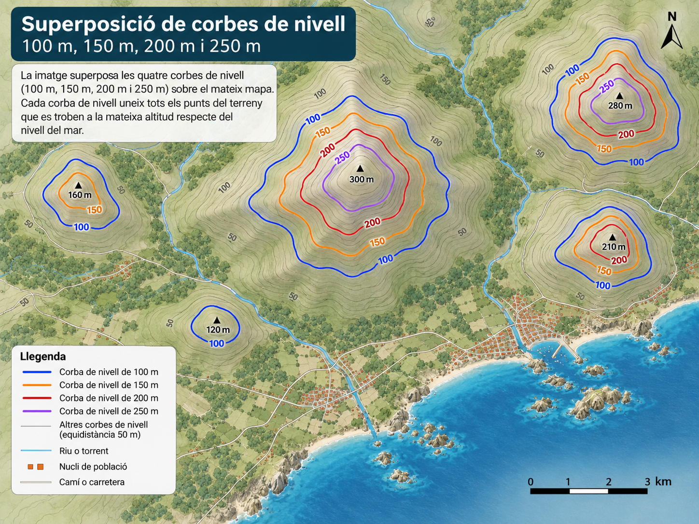
Què conserva cada línia del relleu original?
4 · Descobrim la regla¶
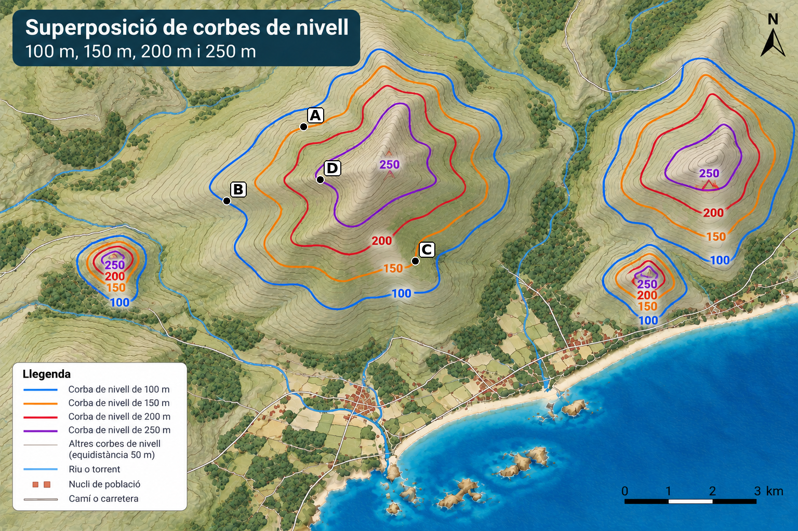
Quins dos punts estan exactament a la mateixa altitud?
Una corba de nivell és una línia que uneix punts situats a la mateixa altitud.
5 · Quina és la cota?¶
Tornau a mirar els punts del mapa.
El punt B és damunt una corba de nivell. Quina és la seva cota?
La cota és l'altitud d'un punt respecte del nivell de la mar. Si el punt és damunt una corba de nivell, la seva cota coincideix amb el valor d'aquella corba.
6 · I si no hi ha número?¶
Suposau que aquestes són cinc corbes de nivell consecutives d'un mapa:
100 m → ? → 200 m → ? → 300 m
Quines cotes tenen les dues corbes sense número?
L'equidistància és la diferència d'altitud entre dues corbes de nivell consecutives. En aquest cas és de 50 m.
7 · On és més alt?¶
Ara combinam el que sabem sobre corbes de nivell i cotes.
Quin ordre situa els punts de menor a major altitud?
Un mapa topogràfic ens permet comparar altituds encara que no hàgim vist el relleu directament.
8 · Les línies ens diuen alguna cosa més¶
Fins ara hem utilitzat les corbes per saber a quina altitud és un lloc. Però la seva separació també ens informa de com canvia l'altitud amb la distància.
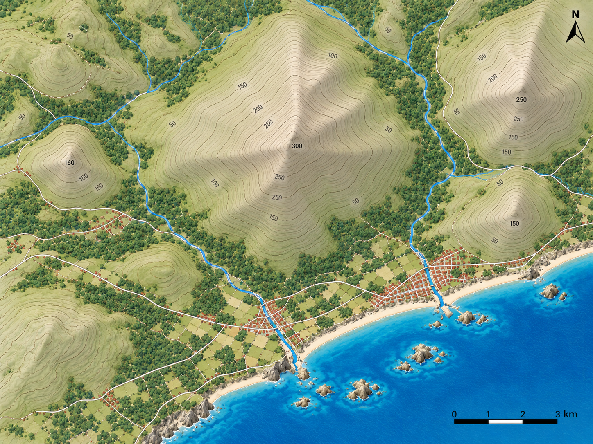
En quina zona guanyaríeu més altitud recorrent una distància horitzontal curta?
Corbes juntes → pendent fort. Corbes separades → pendent suau.
9 · Més alt no vol dir més pendent¶
Ara compararem dues zones diferents del mateix mapa. P és en una zona més alta que Q.
Quina de les dues zones té el pendent més fort?
Altitud i pendent són variables diferents: un lloc baix pot ser molt costerut i un lloc alt pot tenir un pendent relativament suau.